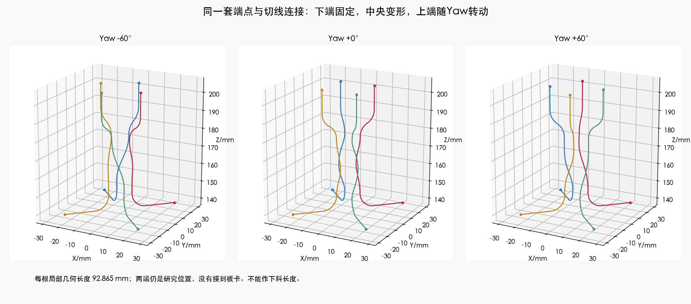
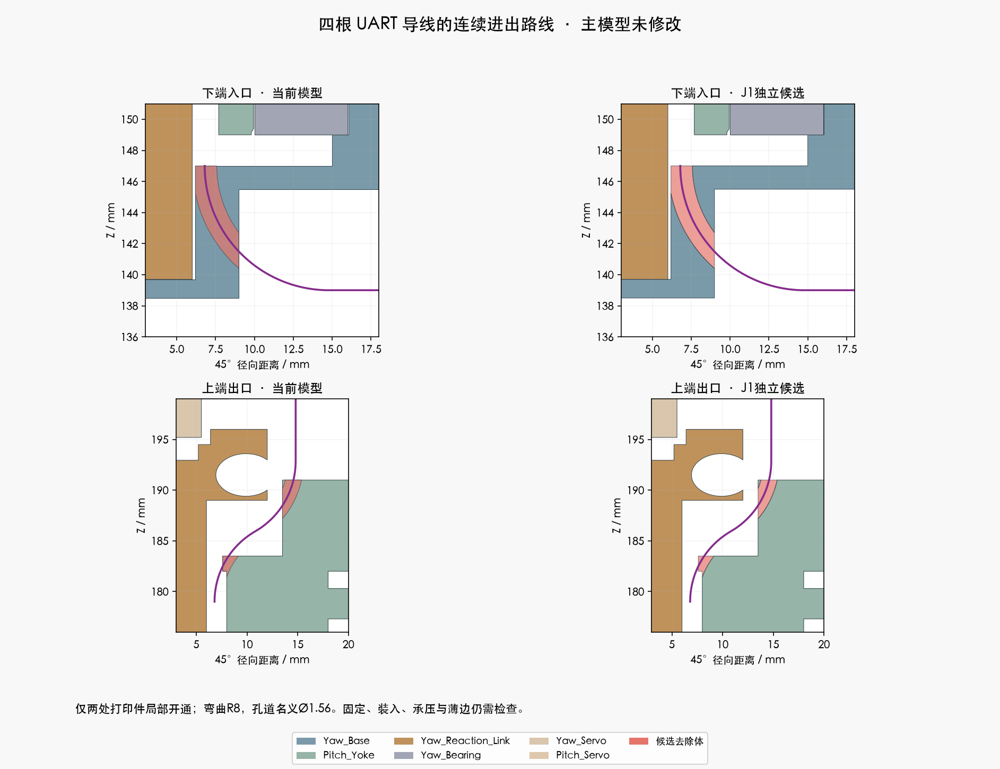

独立候选J1 · 主模型未修改 · 不是供应商加工图。需要先解决端子装入、固定、俯仰连接和整条长度。

| 检查 | 结果和范围 |
|---|---|
| 局部连续导线路线 | PASS；四根线、130头部姿态、209源实体及14根固定线候选 |
| 弯曲与线间间隙 | 最小抽样弯曲半径7.955 mm；四线相互表面间隙下界6.414 mm |
| 打印件 | 只改Yaw_Base和Pitch_Yoke，207个其余实体保持；强度和开口边缘尚未验证 |
| 端子/胶壳装入 | BLOCKED；16种名义参考包络切线随动尝试均有重叠，不等于所有装法无解 |
| 加工长度 | BLOCKED；92.865 mm只是局部研究长度 |

核对预压端子、暂不装胶壳的穿入办法，或与关节装配配合的开放放线方案；同时补齐固定、俯仰段和真实板端连接。现阶段不申请采用J1，以免只把未完成的装配问题带入主模型。
端子和胶壳采用JST目录名义包络，缺少压接后完整形状、公差及CAM实配型号。参考包络出现干涉不能直接解释为原厂端子绝对装不进去。
完整说明 · 独立Blender · 实体检查 · 装入尝试 · 线间检查 · 官方压接资料
主模型保持M1.47；没有采购、制造发布或硬件改动。